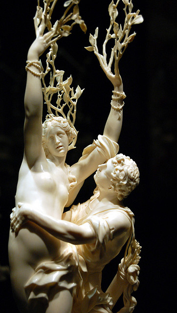

Thần Apollon sau khi dùng những mũi tên vàng giết chết con mãng xà Python, đã gặp phải một chuyện bất hạnh, tuy là một chuyện nhỏ song cũng đem lại cho thần nhiều phút giây đau khổ, luyến tiếc, nhớ nhung. Chuyện xảy ra bắt đầu từ lúc Apollon bắn mũi tên cuối cùng, kết liễu đời con quái vật. Khi đó với niềm kiêu hãnh tràn ngập của người chiến thắng, Apollon chạy băng tới trèo lên lưng Python, đứng hiên ngang trên thân hình đầy vẩy cứng của nó, giơ cao cây cung bạc, hét lên những tiếng sung sướng: “Chiến thắng rồi! Python chết rồi! Chiến thắng rồi! Python chết rồi!”
Bỗng Apollon nhìn thấy một chú bé, một chàng thiếu niên lưng đeo một ống tên vàng, tay cầm cung, đang từ phía trước đi tới. Chú bé, thân hình thon thả, đẹp đẽ, lại có đôi cánh vàng ở sau lưng, ngước nhìn Apollon với vẻ mặt điềm tĩnh dường như không thán phục khiến cho Apollon cảm thấy bị xúc phạm. Apollon mỉm cười, hỏi chú bé với một giọng coi thường:
- Này chú bé kia! Mi mà biết bắn cung cơ à? Thế mà phải đợi đến ngày hôm nay con mãng xà Python mới chết thì ta chẳng hiểu mi cầm cung và đeo ống tên để làm gì? Thôi tốt hơn hết là đưa cho ta ống tên vàng ấy để ta lập những chiến công vinh quang hơn nữa. Ống tên trong tay mi thật vô dụng.
Chú bé vô cùng tức giận, đáp lại lời Apollon:
- Hỡi thần Apollon vĩ đại! Xin chớ coi thường những mũi tên của ta. Ta sẽ bắn trúng nhà ngươi cho mà xem! Dù nhà ngươi có tài giỏi đến đâu chăng nữa cũng không sao tránh khỏi mũi tên vàng của ta.
Nói xong, chú bé vỗ cánh bay vụt đi để mặc Apollon đứng lại với niềm kiêu hãnh của kẻ chiến thắng. Chú bé đó là ai mà lại coi thường Apollon như thế? Đó là thần Tình yêu-Éros mà Apollon không biết. Éros bay lên đỉnh núi Parnasse cao, chọn một nơi đứng để có thể bao quát được bốn phương. Chàng lấy từ sau lưng ra một mũi tên “mũi tên khơi dậy tình yêu” lắp vào cây cung và bắn đi. Chàng truyền cho mũi tên của mình, mũi tên vô hình đối với những người bị bắn, bay đến xuyên thấu vào trái tim Apollon. Và Apollon đã bị trúng tên mà vẫn không hay, không biết. Chưa hết, Éros lại lấy từ sau lưng ra một mũi tên khác, “mũi tên giết chết tình yêu” bắn đi. Lần này bắn về một hướng khác. Chàng truyền cho mũi tên của mình bay đến xuyên thấu vào trái tim tiên nữ Daphné83, con gái của vị thần Sông-Pénée. Và nỗi bất hạnh bắt nguồn từ hai mũi tên vô hình đó của Éros.
Chuyện xảy ra sau khi Apollon giết được con mãng xà Python một thời gian không rõ bao lâu, chỉ biết một buổi sớm kia như thường lệ, Apollon với cây cung bạc vào rừng săn bắn. Đây là khu rừng thuộc đất Thessalie dưới quyền cai quản của vị thần Sông Pénée. Các tiên nữ Nymphe con của Pénée, thường vào rừng vui chơi, săn bắt thú vật. Apollon trông thấy Daphné khi nàng đang hái hoa. Quả là một tiên nữ xinh đẹp, một vẻ đẹp tự nhiên, hiền hòa như những bông hoa rừng nàng đang hái. Từ trái tim của vị thần ánh sáng có bộ tóc vàng dâng lên một niềm xúc động và khát khao được bày tỏ tình cảm với tiên nữ Nymphe Daphné. Apollon tiến đến gần nàng. Một tiếng động nhẹ do bước chân của Apollon giẫm trên thảm lá rừng khiến Daphné giật mình, quay lại. Vừa trông thấy Apollon là nàng vứt vội bó hoa xuống đất, cắm đầu chạy, chạy miết như bị ai đang đuổi. Mũi tên vô hình của chú bé Éros đã giết chết những xúc động và thèm khát ái ân trong trái tim Daphné. Apollon chạy theo nàng. Vừa chạy chàng vừa gọi:
- Hỡi tiên nữ xinh đẹp! Hãy dừng lại, dừng lại! Đừng sợ! Ta không phải là một tên chăn chiên thô bạo hay là kẻ thù của nàng đâu!
Càng gọi Daphné càng chạy. Apollon càng ra sức đuổi theo và ra sức kêu gọi:
- Đừng chạy! Đừng chạy nữa! Ta là Apollon, người con trai vinh quang của thần Zeus đây! Ta yêu nàng! Ta yêu nàng! Đứng lại! Đừng chạy nữa!
Nhưng Daphné vẫn cứ chạy, và Apollon lại ra sức đuổi theo. Apollon đuổi với sức mạnh của trái tim nồng nhiệt, còn Daphné chạy với nỗi sợ hãi của một trái tim đã tắt ngấm mất ngọn lửa khát khao nóng bỏng của hạnh phúc lứa đôi. Apollon đuổi ngày càng gần Daphné. Nàng có cảm giác như nghe thấy tiếng thở hổn hển của Apollon ở sau lưng mình và hơi thở ấy hình như đã phả vào gáy nàng và lướt qua má nàng. Nhưng đây rồi trước mặt nàng là con sông của vua cha. Nàng vội kêu lên:
- Cha ơi! Cha ơi! Cứu con với, cứu con với! Mau lên, mau lên! Không có con bị bắt bây giờ!
Nàng vừa nói dứt lời bỗng nhiên rùng mình một cái, đôi chân mềm mại bỗng cứng đờ ra, cả đôi tay vừa giơ ra chới với cầu xin cha cũng cứng ngắc. Toàn thân nàng biến thành một thân cây, chân như cắm sâu xuống đất và các ngón chân vươn dài ra thành những rễ lớn rễ nhỏ. Mái tóc đẹp đẽ của nàng biến thành những lá cây. Apollon chạy đến nơi thì nàng trinh nữ xinh đẹp Daphné đã biến thành một cây nguyệt quế xanh tươi, tự nhiên như đã mọc lên từ ngàn xưa và từ ngàn xưa vốn tự nhiên và xanh tươi như vậy. Apollon đứng sững sờ ngơ ngác trước sự biến hóa quá nhanh. Chàng đứng hồi lâu rồi đưa tay vuốt ve trên cành lá của nó, buồn rầu nói với nó những lời từ biệt chân thành:
- Hỡi người thiếu nữ xinh đẹp nhất trong đám tiên nữ Nymphe. Ta có ngờ đâu tình yêu chân thành và nồng thắm của ta lại gây ra nông nỗi oan trái này. Vì ta mà nàng đã mất đi cuộc sống của một tiên nữ vô vàn hạnh phúc. Thôi được, từ nay trở đi nàng sẽ là người bạn đường thân thiết của thần Apollon này. Từ nay trở đi chỉ những ai chiến thắng trong các cuộc tranh tài đua sức ở các ngày hội thì mới được đội vòng lá nguyệt quế lên đầu. Apollon và cây nguyệt quế là vinh quang của chiến thắng, chỉ giành cho chiến thắng. Ta chúc em mãi mãi xanh tươi.
Cây nguyệt quế run lên xào xạc. Chỉ có thần Apollon mới hiểu được tiếng nói của nó.
Nhưng một nguồn khác kể, sau khi Apollon giết chết con mãng xà Python, thần đã tự mình tẩy rửa sự ô uế với sự giúp đỡ của cây nguyệt quế. Vì lẽ đó thần đã lấy lá nguyệt quế làm vật trang điểm cho mình.

Daphnê biến thành cây nguyệt quế
Lại có chuyện kể hơi khác đi một chút và hơi... kỳ khôi. Không phải Apollon bị trúng mũi tên của Éros, và Daphné cũng không bị Éros bắn một mũi tên. Các tiên nữ Nymphe vốn sống lánh xa cuộc đời của những người trần tục và các nàng như bẩm sinh vốn là những trinh nữ khước từ hạnh phúc của tình yêu và hôn nhân, Daphné là một trinh nữ đẹp hơn cả. Sắc đẹp của nàng đã làm cho một người trần thế tên là Leucippos mê cảm. Thần Apollon, rắc rối thay, lại cũng mê cảm Daphné. Nhưng cả hai không thể nào bén mảng tới gần các nàng Nymphe được. Vì chỉ thoáng thấy bóng một người đàn ông là các nàng đã bảo nhau chạy trốn. Leucippos nghĩ ra một kế. Chàng cải trang thành một tiên nữ, trà trộn vào bầy tiên nữ Nymphe. Nhờ khuôn mặt xinh đẹp và thân hình duyên dáng nên Leucippos lọt được vào vui chơi với bầy tiên nữ mà không bị nghi ngờ gì cả. Chàng tìm cách bắt chuyện với Daphné. Thần Apollon thấy vậy lòng sôi như lửa đốt. Thần nghĩ ra một cách để phá cái trò gian lận hèn nhát đó. Thần bèn gợi lên trong các nàng Nymphe ý muốn đi tắm, xuống suối tắm. Và như vậy là Leucippos chỉ có... chết. Quả vậy, khi các nàng Nymphe cởi áo lội xuống suối thì anh chàng Leucippos cứ đứng lúng túng mãi trên bờ. Các tiên nữ sinh nghi. Và tất nhiên việc phải xảy ra đã xảy ra. Leucippos bị đánh chết. Chỗ này có chuyện kể hơi khác: các vị thần đã tung ra một đám mây mù cướp Leucippos đi, cứu anh chàng si tình thoát chết. Bây giờ là lúc thần Apollon xuất hiện. Thần đã lợi dụng được tình thế rối ren nói trên tìm đến ngay trước mặt nàng Daphné. Trong phút bối rối, Daphné không biết tìm cách gì để thoát khỏi tai họa ngoài cách biến mình thành cây nguyệt quế. Từ đó trở đi cây nguyệt quế là vật thân thiết, yêu dấu của thần Apollon. Thần lấy một vòng lá nguyệt quế đội lên đầu để lưu giữ luôn bên mình kỷ niệm về một mối tình không toại nguyện.
Người Hy Lạp xưa kia coi cây nguyệt quế là tượng trưng cho ánh sáng, sự tẩy rửa, sự chữa lành bệnh tật. Cây nguyệt quế được dành riêng cho việc thờ cúng Apollon, được trồng ở khu vực đền thờ Apollon ở Delphes.
Ngày nay cây nguyệt quế, vòng lá, vòng hoa nguyệt quế trở thành một biểu tượng cho thắng lợi, chiến thắng. Ở các nước phương Tây ta thường thấy biểu tượng cành nguyệt quế ở tượng đài các anh hùng dân tộc, các danh nhân văn hóa, tượng đài các chiến sĩ vô danh... Trong các cuộc thi đấu thể dục thể thao ở nhiều nước trên thế giới hiện nay vẫn còn giữ tục lệ đội lên đầu hoặc khoác vào cổ người chiến thắng một vòng lá, vòng hoa nguyệt quế84.
[83] Tiếng Hy Lạp daphné: cây nguyệt quế; tiếng Pháp: laurier.
[84] Trong văn học Pháp, cueillir des lauriers: giành được thắng lợi (nghĩa đen: hái được cành nguyệt quế); se couvrit de lauriers: được vinh quang, vẻ vang (nghĩa đen: được phủ đầy cành nguyệt quế).